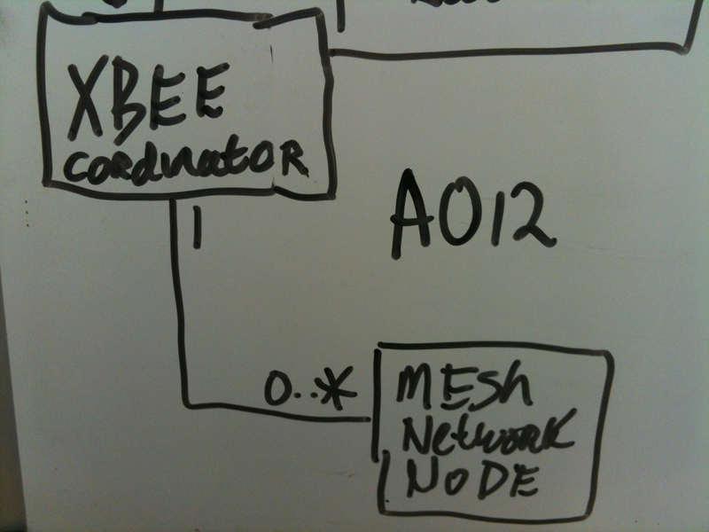
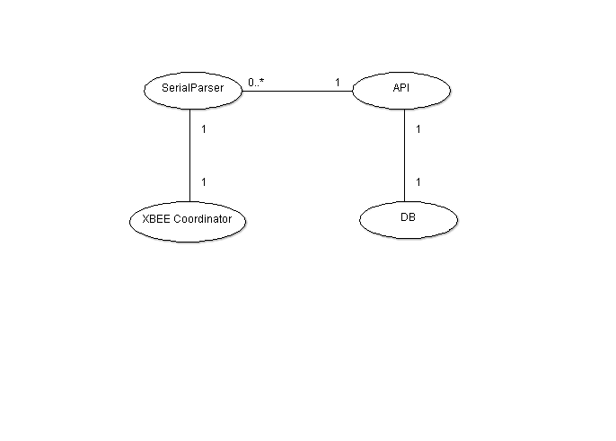

Table of Contents
- 1. Declaration of Authenticity
- 2. Acknowledgements
- 3. Introduction
- 4. Project Goals
- 5. Project Scope
- 6. Project Processes
- 7. Project Documentation
- 8. Deliverables
- 9. Iteration Plan
- 10. Project Backlog
- 11. Ardtweeno Engineering Release 2
- 12. Project Class Diagram and Class Listing
- 13. Package Diagrams
- 14. API Specification
- 15. Ardtweeno Minimum System Requirements
- 16. Installation Instructions
- 17. XBEE Radio Network
- 18. Node Design
- 19. Technologies Used in Ardtweeno
- 20. Future Work
- 21. Conclusions
- 22. Bibliography:
Ardtweeno - Final Report
Research Group: Department of Computing, Maths & Physics
Address: Waterford Institute of Technology, Cork RD Campus, Waterford
Author(s): David Kirwan
Email List: davidkirwanirl@gmail.com
Rev Date: May 18, 2013
Rev Number: 0.2.4
Date: September 10, 2012
Copyright: © David Kirwan
Synopsis:
Ardtweeno - An open source application gateway to link a distributed sensor mesh network to an Internet Protocol network
Except where explicitly stated, this report represents work that I have done myself. I have not submitted the work represented in this report in any other course of study to an academic reward. Name: =========================== Date: ===========================
This project would not have been possible without the support of the following people.
To my fantastic supervisor Eamonn de Leastar to whom I am eternally grateful for his patience, guidance, knowledge and for being so generous with his time throughout the development period. Thank you, it has been a real pleasure working together.
To my classmates in Applied Computing class 2009 - 2013, what a fantastic bunch of people, thanks for the experiences over the last four years. It has been an honour.
To my lecturers at the Waterford Institute of Technology, you have all been so open and free with your sharing of knowledge, it has been an absolute pleasure learning from you at WIT.
To my sister Jean, you inspired me to work as hard as I have these last 4 years. I wanted to make you as proud of me as I am of you. If you beat me to PhD, I’ll buy you a bag of chips in Roccos.
To my father, I can only imagine the conversations we might have had, I suspect you would have loved playing with this equipment as much as I have.
To my mother, thank you for your friendship. You have always been a positive influence in my life. Some day you must sit down and explain how you can walk past, and in the time it takes to cross a room and without any prior involvement, solve a problem I have been struggling with for days.
To my four dogs Noah, Oscar, Rosie and Skippy, you are the best mutts a man could ask for.
As consumer programmable embedded systems shrink in size, cost and availability, it becomes feasible to deploy them in roles previously considered cost prohibitive. While the costs fall the computing power of these embedded systems rise sharply as they fast approach that of personal computers. This allows the computing enthusiast to develop interesting creations previously only available to large corporations with extensive research and development budgets.
The most well known consumer programmable embedded platform todate is the Arduino. The Arduino was released by Massimo Banzi, David Cuartielles, Gianluca Martino, Tom Igoe and David Mellis in 2005, but began life as a teaching tool for students at the Interaction Design Institute Ivrea in Italy. The project started in 2002, as Banzai had been hired by the IDII institute as an associate professor to help create new methods of performing interaction design [IEEE-2011]. Banzai hoped to create a platform to program a micro-controller in the same easy fashion as the on screen visuals created by the Processing language and its IDE. A masters student at IDDI, Hernando Barragan, took the first steps towards realising this when he created a prototyping platform he named Wiring which contained an IDE and a programmable circuit board.
Arduino was released as an open hardware prototyping platform and continues to be the go to technology for artists, electronics hobbyists and students [IEEE-2011]. I had my first experience with Arduino in 2010 when I purchased a DIY kit to create a remote control from eBay. The kit contained the Arduino Mega board which has the Atmel1280 16 MHZ CPU, 4 KB of RAM, and 128KB of storage, along with 52 mix of analog/digital inputs/outputs suitable for connecting to and controlling devices such as motors, switches or LED’s. After several months of reading forums, online tutorials and Youtube videos I had a good grasp of what the Arduino systems were capable of. I envisioned the Arduino FIO board to be perfectly suited to my project.
The FIO board has the Atmel328 8 MHZ CPU, 2 KB of RAM, and 32KB of storage, with a limited number of inputs/outputs, the main selling point of the FIO board is the on-board circuit to handle the trickle charging of Lithium Polymer batteries using solar panels, and equally important, the on-board cradle to hold an XBEE radio. The FIO is the perfect solar powered sensor platform which can communicate sensor data back to a collector system using the XBEE radio. It is for this reason I decided to make use of the Arduino FIO board in my project.
One recent particularly newsworthy development is the release of the Raspberry Pi earlier this year. The Pi is a Broadcom ARM CPU powered full featured computer system designed to be cheap and easy to use as a means to teach children how to write code. The Pi board was released at the end of February 2012, is no bigger than a credit card and has already shipped upwards of half a million units since. The Raspberry Pi foundation is a not for profit charity created by Ebon Upton et al. at the University of Cambridge in the United Kingdom.
It is interesting to many computing enthusiasts as this machine has a sub-40 Euro price tag, it can run from a battery source while still providing HDMI video output. The Pi system has multiple Linux distributions available, such as Archlinux Arm or Debian Squeeze [raspberrypi-2012]. The Linux distribution I picked for the Operating System on my Raspberry Pi is Debian 7 Wheezy. I have found Debian 7 to be comfortable to work with as it has access to a large number of applications and utilities compiled for ARM systems in the apt-get repositories, making it the perfect development platform for my project.
The Ardtweeno system I have developed is a distributed sensor mesh network gateway, which bridges devices connected through a serial link to devices over Internet Protocol (IP). The core system is a Ruby application with an exposed Sinatra micro web application acting as an API. It has been designed to run on the Raspberry Pi as a Platform as a Service or PaaS. I had hoped to develop the serial parser subsystem in Ruby also, but due to issues surrounding threading, namely threading while reading from a serial device, I abandoned the Ruby gem serialport in favour of a similar serial library in NodeJS. This is how it is implemented in the initial release, it is something I intend on changing at the earliest possible opportunity, I hope to replace this system with a C implementation of the parser sub system, as a Ruby C Extension.
Ardtweeno - Application Gateway for a Mesh Network
All data collected is logged to a database if one is configured and available. The intention for this is to allow statistical analysis and perhaps graphs to be generated. These graphs could potentially be included in hourly / daily reports which can be attached to the systems twitter feed in automatic updates and to other suitable social media. This is currently possible using data gathered through the Ardtweeno API.
I have several examples of the API being consumed, which can be seen in the tech demo web application which I developed to
demonstrate some possible uses for the Ardtweeno system. The tech demo web application consumes the Ardtweeno API and generates
output such as the dynamically constructed topology diagram for the Ardweeno gateway. However in the long run I hope to see the
Ardtweeno system being used like a locally running version of [cosm]. The system can act as a gateway and storage solution for
smart sensor platforms in the home. Eventually I hope to mature the system to the point where applications can be developed to
take advantage of the Ardtweeno features while building home / commercial automation systems.
In later releases I hope to make it possible to interact with the service so that it may respond to commands received on twitter,
by developing a Twitter bot to handle and respond user requests such as creating reports on demand, or simply
attaching the latest graph in a reply tweet to the user. Integration with Dropbox, or some other cloud storage
is also a possibility, where subscribers to the Ardtweeno system may receive update files within a folder shared
between the user and the Ardtweeno system.
A feature which made it into the 0.2.x release branch at the last minute is the web hook push notification system. Ardtweeno has a rudimentary implementation of a watch list system where a user can instruct the gateway to place a watch on a node. Should traffic be received on the SerialParser from this particular watched node, Ardtweeno will construct a push notification packet and using a HTTP 1.1 POST request, push the packet to the designated web hook. This could potentially offer another way to interact with approved third parties. It could also be used to spur the update and automatic generation of news updates within an application which consumes the Ardtweeno services.
Simple XBEE Mesh Network [xbee-mesh-2012]
Early in development, I envisaged the ultimate goal of being able to push updated firmwares to mesh network nodes as required using the Ardtweeno Application Gateway. I have placed this goal on the long term project backlog. I hope to eventually allow for firmware uploads to non homogeneous node mesh network nodes as in a targeted node firmware upgrade to maximise the usefulness of the system. I also intend to allow the upgrading of all network nodes simultaneously in a broadcast fashion as would be the case in a homogeneous node mesh network. I plan to use the Arduino command line firmware compiler tool ino to develop a solution for pushing firmware updates to nodes on the mesh network using my Ardtweeno system [ino-2012].
This feature will increase the commercial appeal of the project exponentially and for this reason I’ll endeavour to include as soon as possible.
I envision the Ardtweeno system being used in locations where an end user requires reliable low maintenance embedded sensor platforms to take regular measurements of some industrial process or ambient state. The system also has great potential to provide the PaaS infrastructure on top of which developers can produce home automation applications to control processes within the home environment.
Case Study One. A factory floor with multiple assembly lines producing products which need to be kept at a specific temperature. Each mesh network node has a temperature sensor attached which maintains careful watch to ensure the temperature does not fall below a certain threshold, or breach an upper temperature level. If either condition is met, the node can raise an alarm with the Ardtweeno Application Gateway, but can potentially be programmed to take steps to rectify the situation such as turning cooling fans on or off, or perhaps heating elements up or down.
Case Study Two. A data centre maintains 15 racks of servers, all requiring strict temperature control. Each rack has a mesh network node attached, monitoring the temperature inside the rack, with a second sensor monitoring the pressure of the water cooling system. A drop in water pressure might indicate a pump has failed, at which point the node issues an alarm back to the Ardtweeno Application Gateway, to issue a request that a service engineer investigate, while lighting a warning light on the rack to provide a visual cue to aid service engineers examining the individual rack for sensor malfunctions. Upon inspection the rack appears to be fine, and the alarm was caused by an overly sensitive threshold for water pressure value in the mesh network node. This is resolved simply by uploading a firmware with this value relaxed to all mesh network nodes in the data centre managed by the Ardtweeno Application Gateway.
Case Study Three. An amateur bird watcher wishes she could capture a picture of visitors to the bird table in the garden. She travels often and sadly does not get the time to spend sitting with her camera ready to capture some nice pictures. She decides to use a technological solution and sets a mesh network node up in her garden, powered by solar panels and a small lithium polymer battery it is autonomous and requires no further maintenance. She then attaches an infra-red sensor to the mesh network node, along with a small JPEG camera. Using the Ardtweeno Application Gateway she instructs the mesh network node to take a picture every time the infra-red sensor picks up activity over a certain threshold, and then have it transmit the image back over the serial link to the Gateway for processing and storage. The Ardtweeno Application Gateway updates her twitter feed and attaches the captured images. The neighbours and friends which regularly view the feed, marvel at just how many crows seem to visit her bird table for their supper.
Case Study Four. An Electronic Engineer has an existing home automation system with an ARM micro-controller hooked up to each sensor. Each micro-controller powers an LCD which shows the current sensor reading value. He would like to have a system where he can visit a website a web browser on the laptop or perhaps his smart phone or tablet, but is unwilling to develop the entire system himself from scratch. A friend recommended the Ardtweeno Application Gateway which is a PaaS and might be perfect for his needs. With a little research, he commits to adding the XBee radio links to form a mesh network which can be then read by the Ardtweeno gateway. Once the system was up and running he set to work developing the simple web page which showed the list of connected devices and their current sensor readings.
I developed the Ardtweeno system according to Agile Methodology while making use of Extreme Programming techniques such as providing iteration sprints on a fortnightly basis. Each iteration producing production grade code at each iteration end, with full featured Engineering releases at set points through the semester. I had experience using Agile Methodology and Extreme Programming techniques during my internship with the Telecommunications Software Support Group (TSSG). I found the experience highly enjoyable and felt that it promotes good work practices. It is for this reason I choose Agile Methodology and the Extreme Programming techniques as the processes which I followed during my project development cycle.
All aspects of the project are maintained under source control in the project bitbucket.org git repository. This repository is private, and will remain so until such time as the ER2 has been released, and the project released publicly. I hope to release the Engineering Release tagged project on github.com and make it available to the public as an open source project with the aim to continue development in the future. Development on this project may be continued during my work at the [tssg], and or perhaps further developed during postgraduate study.
I have created the following Git repository on github.com in anticipation of the release at https://github.com/davidkirwan/ardtweeno The current codebase is close to reaching the goals and functionality specified in the MVP system specification, and I will be releasing the ER2 tagged codebase along with the latest project documentation onto the github.com wiki associated with the project. ER1 was completed by January 7th 2012 and a working demo was provided to my supervisor, project second reader and the head of the Applied Computing course.
I have also claimed the ardtweeno gem name on rubygems.org. When the ER2 codebase is released on github.com I also intend on releasing the built gem artifact on rubygems.org at the following project URL: https://rubygems.org/gems/ardtweeno
I have chosen the Attribution-NonCommercial 3.0 Unported (CC BY-NC 3.0) licence for the Ardtweeno - Application Gateway as I feel this licence fits my needs best. This allows developers to use the system for free, while also collaborating with others to make changes to it. This licence prevents third parties the right to use the system for commercial purposes however, should someone be interested in making commercial use of the system, they must contact me directly.
During my investigations I have identified the following stakeholders in the project. These stakeholders should represent all likely users of the Ardtweeno system which have been identified to date.
The stakeholders identified in the system are as follows:
- User interacting with the Ardtweeno system through Twitter.
- User directly connected to the Ardtweeno Webapp system over HTTP.
- User directly connected to the Ardtweeno Gateway system over HTTP REST API.
- Network Admin, responsible for maintaining the mesh network gateway and nodes.
- Content Admin, responsible for maintaining the content, and overseeing auto generated content on the web application.
- Installation Technician, responsible for the initial set up of the system.
I have implemented a testing scheme using the Test Driven Development methodology in the Ardtweeno project. When commiting to the development of new features I first create test cases which correspond to the features which fail at first as they are unimplemented. I then implement the features, and test continuously, the test cases begin to pass as the features are implemented. The Ruby gem Test-Unit has been used for testing the backend router application, rack-test testing framework is used for the Sinatra REST API web application.
The following shows the number of lines of code in the ER2 Ardtweeno system, which also includes the tech demonstration sinatra web
application, and the Test-Unit test cases. The total stands at 4068 lines of code. When including the Sinatra view code, brings
the total upto 4992 lines of code at the latest count.
[david@archbox ardtweeno]$ find . -name '*.rb' | xargs wc -l
147 ./ardtweeno-gem/test/parser_test.rb
247 ./ardtweeno-gem/test/rest_api_test.rb
43 ./ardtweeno-gem/test/serialport_mock.rb
254 ./ardtweeno-gem/test/api_test.rb
166 ./ardtweeno-gem/test/nodemanager_test.rb
114 ./ardtweeno-gem/test/dispatcher_test.rb
15 ./ardtweeno-gem/test/test_helper.rb
74 ./ardtweeno-gem/test/packet_test.rb
104 ./ardtweeno-gem/test/node_test.rb
121 ./ardtweeno-gem/lib/ardtweeno.rb
300 ./ardtweeno-gem/lib/ardtweeno/nodemanager.rb
117 ./ardtweeno-gem/lib/ardtweeno/node.rb
538 ./ardtweeno-gem/lib/ardtweeno/dispatcher.rb
98 ./ardtweeno-gem/lib/ardtweeno/packet.rb
260 ./ardtweeno-gem/lib/ardtweeno/restapi.rb
542 ./ardtweeno-gem/lib/ardtweeno/api.rb
221 ./ardtweeno-gem/lib/ardtweeno/serialparser.rb
65 ./ardtweeno-gem/lib/ardtweeno/configreader.rb
51 ./ardtweeno-gem/lib/ardtweeno/db.rb
33 ./ardtweeno-gem/lib/ardtweeno/exceptions.rb
558 ./tech-demo/tech-demo.rb
4068 totalI have chosen to write all project documentation using the Asciidoc markup language [asciidoc] which allows me develop a living document. Asciidoc is perfect for my needs, as I created a toolchain wrapper for the Asciidoc tool during my internship at the TSSG. This toolchain allows the output of PDF documents with a nicely styled header, footer and coverpage from input written in the Asciidoc language. This tool is has now been released for public consumption by the [tssg] as an open source project on https://github.com here: [asciidoc2html-pdf].
I have taken a modular approach to the construction of the documentation, I break chapters and sections out into new Asciidoc files. Images are stored in a single location which I reference within the documentation files with relative path URLs. I then construct a single index file to reference each chapter and section in the order I require for the particular report. By taking this approach, it breaks the documentation into smaller and more manageable chunks which are nicer to work with. This approach also forces me to constantly keep an eye on the overall coherency and readability of the documentation, while also allowing the potential for reuse of documentation sections in different types of report at a later stage. On my internship I witnessed multiple occasions where documentation sections would be reused when building reports for different system stakeholders. This inspired me to attempt to emulate this work flow for my Ardtweeno system. The toolchain merges each section together into a single PDF document at build time.
All documentation is maintained under source control in the project Git repository which also includes technical documentation. The technical documentation is automatically generated from the documented source code.
NOTE: Technical documentation for the codebase is written side by side the code in the comments above each function. Using the Ruby gems rdoc, ri and yard technical documentation is automatically extracted then generated during the gem build process. This technical documentation will be available at http://rubydoc.info/gems/ardtweeno/ once the built gem artifacts have been uploaded to rubygems.org. Usage instructions will also be available in the project Wiki at https://github.com/davidkirwan/ardtweeno/wiki
This section contains the deliverables due for the Ardtweeno project.
The following project deliverables are due in Semester 7
Project Proposal. Thurs, 20 Sept 2012 Submitted
Report 1. Mon, 5 Nov 2012 Submitted
Abstract and Photo. Fri, 9 Nov 2012 Submitted
Report 2. Fri, 7 Dec 2012 Submitted
Presentation. Mon - Tues, 07 - 08 Jan 2013 Completed
The following is a list of project deliverables due in Semester 8
Project Poster. Sat, 26 Jan 2013 Submitted
Sun Life Sourcecode Review Permission. Fri, 1 Feb 2013 Submitted
Final Report. Mon, 18 May 2013 Submitted
Final Demonstrations. Mon, 20 May 2013 Pending
Student Faire. Mon, 23 May 2013 Pending
Sunlife Presentations. TBA
With help from my project supervisor Eamonn de Leastar I have begun breaking down the project workload into manageable tasks, and then assigning them to the project backlog. On a weekly basis together we decide what to place on the agenda for this weeks iteration.
03/10/12 - 17/10/12
- Generate a SerialParser class from the feasibility prototype code
- Research a means to mock a serial port
- Implement unit tests for the SerialParser using a serial device mock
17/10/12 - 07/11/12
- Refactor SerialParser tests to better meet test driven development best practices
- Implement NodeManager class skeleton and unit tests
- Implement Node class skeleton and unit tests
- Implement Packet class skeleton and unit tests
- Implement Dispatcher class skeleton and unit tests
07/11/12 - 21/11/12
System Modelling
- Create high level overview of each subsystem using a package diagram perhaps
- Look at adding a global configuration file
- Moving the storage items and functions into the Node class.
Tests
- Implement NodeManager class skeleton and unit tests
- Implement Node class skeleton and unit tests
- Implement Packet class skeleton and unit tests
- Implement Dispatcher class skeleton and unit tests
- Implement SerialParser class skeleton and unit tests
Housekeeping
- Update the README in the project repository to include the installation and testing instructions
21/11/12 - 05/12/12
REST API
- Develop HTTP REST API interface for the Ardtweeno System
- Authentication system for administrator functions such as an API key
- Documentation for the API
System Modelling
- Create high level overview of each subsystem using package diagrams
- Move all storage functions for Ardtweeno::Packet instances into the Node class
- Implement Ardtweeno::Dispatcher#status
Tests
- Implement Dispatcher class skeleton and unit tests
- Implement API testing
05/12/12 - 19/12/12
Data Storage
- Move all storage functions for Ardtweeno::Packet instances into the Node class
REST API
- Continue development on HTTP REST API interface for the Ardtweeno System
- Implement an API class structure and break out into new Module
System Modelling
- Create high level overview of each subsystem using package diagrams
- Continue development on documentation for the API
- Create project deliverables documentation for the project
Tests
- Implement API testing
19/12/12 - 02/01/13
Data Storage
- Move all storage functions for Ardtweeno::Packet instances into the Node class
- Implement means to store data contained in each Node to a database
REST API
- Implement an API class structure and break out into new Module
- Implement pagination interface for traversing matching output
System Modelling
- Create high level overview of each subsystem using package diagrams
- Continue development on documentation for the API
Tests
- Implement API testing
02/01/13 - 16/01/13
Data Storage
- Move all storage functions for Ardtweeno::Packet instances into the Node class
- Implement means to store data contained in each Node to a database
System Modelling
- Continue development on documentation for the API
Tests
- Implement API testing
ER1
- Prepare final steps for release of the ER1 system
16/01/13 - 30/01/13
Data Storage
- Implement means to store data to a file
API Development
- Continue development on documentation for the API
- Implement API according to best practices
- Refactor and moving the REST API into a class within the Ardtweeno gem module
- Move Procfile along with config.ru and Gemfile into the gem root
ER1
- Prepare final steps for release of the ER1 system
30/01/13 - 13/02/13
Data Storage
- Implement means to store data contained in each Node to a database
API Development
- Continue development on documentation for the API
- Continue development on the REST API
ER1
- Prepare final steps for release of the ER1 system
13/02/13 - 27/02/13
Data Storage
- Implement means to store data contained in each Node to a database
API Development
- Continue development on documentation for the API
- Continue development on the REST API
ER1
- Prepare final steps for release of the ER1 system
Tech Demonstration
- Develop a web application, possibly responsive, to demonstrate the range of API features being consumed
27/02/13 - 13/03/13
Tech Demonstration
- Develop a web application, possibly responsive, to demonstrate the range of API features being consumed
- Incorporate Ardtweeno Gateway control panel into tech demo web app
- Using a Javascript SVG graphical library produce an image representing nodes in a zone
- Allow navigation to the highchart graphs from this diagram
- Develop interface to dynamically generate and display network topology based on data pulled from the API
- Develop mock mesh network script to simulate 2 - 5 zones with several nodes per zone
13/03/13 - 27/03/13
Tech Demonstration
- Develop a web application, possibly responsive, to demonstrate the range of API features being consumed
- Develop mock mesh network script to simulate 2 - 5 zones with several nodes per zone
- Consider adding the /gateway/topology of the tech demo to the gateway API
- Click on node in topology, takes to an individual node graph
27/03/13 - 10/04/13
REST API
- Flesh out functionality of /api/v1/system/status
- Implement push notifications
Mesh Network
- Configure and setup 2nd physical ardtweeno node
- Configure Coordinator AT for mesh network mode
10/04/13 - 24/04/13
Project Deliverables
- Prepare Final Report
- Prepare Final Presentation
- Prepare Conference Paper
This section contains the Ardtweeno project backlog. Features planned in future releases are first added to the backlog. From here they are ranked in order of importance and priority, before being shifted into the Iteration Plan during the fortnightly sprints for implementation.
Longer Term Backlog
- Alter system to take into account recently identified bordercases regarding adding of packets to the system, such as packets with no data within
- Add the topology graph, punchcard graph and possibly others from the tech demo as components in the gateway itself
- Move from the manual post creation system over to a dynamically constructed URL from configuration file
- Configure the XBEE radios for API mesh network mode
- Flesh out functionality of /api/v1/system/status
- Implement the pulling of packet data from the database rather than the datastructure in RAM
- Make a favicon.ico for both the tech demo and the gateway maybe
- Investigate webintents.org a possible future replacement for REST services, or as a means to discover how the Ardtweeno implements push notifications and how a client can discover these services
- Using the ino tool (inotool.org), I can compile the Arduino firmware through commandline, and therefore shouldn’t have issues uploading to the FIO boards over XBee.
- Look into compiling native ruby extensions and what that entails, could maybe handle the tty0tty compilation automatically on machines, or even the serial parser in native c that would be desirable in the long term. But would then probably limit the platform that this system can be installed on, to Linux, Unix or possibly OSX
Engineering Release 2 of the Ardtweeno system is now ready to be released. All but a handful of features promised in the MVP feature list have been implemented in ER2. These remaining features have been pushed onto the project backlog with the intention of implementation at a later date.
The following features have been identified as set for inclusion into the MVP feature set and have been further broken up into three different stages:
Setup and Configuration
- Arduino FIO Configuration
- Raspberry Pi Configuration
- Serial Router Configuration
- Ardtweeno Web Application Configuration
- Database Creation
Basic Network Configuration
- Mesh Network Coordinator Configuration
- Mesh Network Node Configuration
High Level Feature List
- Web Application Graph Generation
- Web Application Report Generation
- Web Application Tweet report onto https://twitter.com
The setup and configuration section groups features which are available with the installation of the system. The least complex system requires a single network node, with a single sensor attached, and the skeleton firmware installed. This breaks out into the following userstories:
ER1 A001 - A002
Single sensor attached to Arduino FIO with barebones firmware. Arduino FIO with XBEE Radio and single 1-wire compatible sensor attached, running the skeleton firmware.
A001 As an installation technician; I want to have the 1-Wire library imported on the Arduino FIO; So that I can read in a sensor value from a 1-wire compatible sensor which is attached;
A002 As an installation technician; I want to construct a formatted string from the sensor data in RAM on the Arduino FIO; So that I can transmit it out the serial interface;
ER1 A003 - A005
Raspberry Pi Initial System Configuration. The Raspberry Pi machine is running the latest release of the Raspbian Wheezy distribution, Raspbian is a fork of the Debian compiled specifically to work with the ARM 7 platform. While it will in all likelihood work fine using any Linux distribution, I picked the distribution which was recommended by the RPi team, it is recommended you use a distribution version released after this date so as to take advantage of newly bundled kernel modules.
A003 As an installation technician; I want to have at least the 18-09-2012 release of Raspbian Wheezy installed on a SD Card in the Raspberry Pi; So that I have the kernel modules available to operate all hardware likely to be used in Ardtweeno;
A004 As an installation technician; I want to have all dependencies required by RVM available on the Raspberry Pi; So that I can install _Ruby Version Manager_ which allows easy access to the Ruby programming language and also Ruby on Rails;
A005 As an installation technician; I want to have the Ruby gems installed on which Ardtweeno depends; So that I can make use of them in the Ardtweeno application;
ER1 A006 - A007
Ardtweeno Serial Router Configuration. The Ardtweeno Serial Router node.js application will be installed and run from the Raspberry Pi machine.
A006 As an installation technician; I want the Ardtweeno Serial Router available on the Raspberry Pi; So that I can launch an instance of the system to allow routing and or storage of signals from serial devices;
A007 As an installation technician; I want the Ardtweeno Serial Router to have access to a database; So that any data gathered on the serial link, can be stored in the database for later retrieval;
ER1 A008 - A0010
Ardtweeno Sinatra Web App Configuration. The Ardtweeno Sinatra web application, will be installed and run from the Raspberry Pi machine. The following barebones features will be available after installation of the MVP.
A008 As an installation technician; I want the Ardtweeno codebase available on the Raspberry Pi; So that I can launch the barebones system for configuration;
A009 As an installation technician; I want the Ardtweeno Sinatra Web App to have access to a database; So that any data previously gathered data can be read into the system;
A010 As an installation technician; I want the Ardtweeno Sinatra web app to be able to display formatted test data; To ensure that it is successfully displaying data read from the database;
ER1 A011
Database Setup. The system can be configured to work with any database suitable for use with a web application, However the Ardtweeno has been developed with MongoDB in mind and in the ER2 system only has MongoDB support implemented.
A011 As an installation technician; I want to install a MongoDB database on the Raspberry Pi; So that the Ardtweeno system can store and retrieve data;
The following userstories relate to the initial configuration of the XBee 802.15.4 Zigbee Radio Network.
|  |
ER1 A012
Arduino FIO Network Configuration. Each Arduino FIO node, requires an XBee radio attached. The following userstories relate to this network provisioning.
A012 As an installation technician; I want to configure an XBee radio transmitter to connect to the XBee Coordinator; So that I can connect it to the Arduino FIO node, to allow network connectivity from the Arduino device to other hosts on the mesh network;
|  |
ER1 A013 - A014
Ardtweeno Mesh Network Router Configuration. A single XBee router is required to coordinate the other XBee mesh network hosts. The following userstories relate to provisioning the XBee router.
A013 As an installation technician; I want to configure an XBee radio transmitter to operate in Coordinator mode; So that I can use it to coordinate the other XBee hosts in the mesh network;
A014 As an installation technician; I want to connect a Coordinator configured XBee radio to the Raspberry Pi using the USB breakout board; So that the Ardtweeno Serial Router can interact with hosts on the XBee mesh network;
The following userstories will also be included in the Engineering Release 1 and together make up the minimum viable product (MVP). This section details some of the features which will become the main focus areas in later releases as the system becomes more stable and feature rich.
ER1 A015 - A017
A015 As an installation technician; I want to format the data read in from the database; So that I can construct a graph from the data using the R graphing system;
A016 As an installation technician; I want to ensure that clients connected to the Ardtweeno application over HTTP; Can view a sample report generated from data collected on the XBee mesh network;
A017 As an installation technician; I want to allow a message to be written in a HTML form; Which will accompany a freshly generated graph image in a tweet onto the Twitter service;
ER2 will be released on the [ardtweeno-github] repository on May 20th to coincide with the Student Fair at the Waterford Institute of Technology, Ireland.
 |
Arduino FIO and components used in a network node
This section contains the Minimum Viable Product class digram for the Ardtweeno system. I have also included a list of the Ruby Classes identified so far and their minimum viable product function designated for release in Engineering Release 1.
Ardtweeno Class Diagram
All Classes belong to the Ruby module Ardtweeno.
Ardtweeno::Dispatcher. The Dispatcher class handles the control of backend systems as follows:
- Responsible for the launch and management of the SerialParser subsystem to route information received from nodes on the mesh network.
- Launch and manage an instance of the of Ardtweeno::NodeManager class to handle nodes on the Mesh Network serviced by the Ardtweeno:SerialParser system.
- Valid data from valid authorised mesh network nodes is converted to Ardtweeno::Packet form and then stored in the associated Ardtweeno::Node buffer.
- Invalid data is dropped.
- Valid data from unauthorised nodes is dropped.
Ardtweeno::SerialParser. The SerialParser class performs the following tasks in the MVP system:
Currently the SerialParser subsystem has been disabled due to threading issues with the Ruby serialport gem. A system with similar functionality has been implemented in node.js to get the project up and running. The intention is to reimplement the SerialParser with a Ruby C extension, or perhaps a C/C++ system. The serial parser subsystem will form a large part of the future development of the system in any case.
- SerialParser system listens for mesh network nodes to transmit data to the XBEE Coordinator on a serial port.
- SerialParser submits all data received to the Ardtweeno REST API for filtering/storage.
Ardtweeno::NodeManager. The NodeManager class performs the following:
- Manages the addition or removal of Ardtweeno::Node to the mesh network.
- Exposes Ardtweeno::Node lookup and retrieval interface to other elements in the system.
- Manages when node buffers are written to storage before flushing.
Ardtweeno::Node. The Node class is designed to represent the body of knowledge required by the system to model a real world mesh network node.
- Maintains an Ardtweeno::Packet buffer
- Manages the addition of Ardtweeno::Packet instances received by the Ardtweeno::SerialParser
- Exposes Ardtweeno::Packet retrieval interface to other elements in the system.
Ardtweeno::Packet. The Packet class is a storage class to hold data received on the mesh network.
Ardtweeno::API. This class is responsible for handling requests received through the HTTP REST API.
- Parses API requests
- Exposes HTTP REST Interface
- Returns JSON string containing results from query
Ardtweeno::ConfigReader. The ConfigReader has the ability to load and save configuration data. For the most part this system while implemented is not used within the system currently. At a later date as functionality is fleshed out, this configuration reader and writer class will ensure the settings are serialised to disk correctly.
Ardtweeno::DB. The DB class is responsible for initialising the MongoDB connector instance, from the passed parameters.
The following section contains the package diagram for the ER2 Ardtweeno system. This diagram aims to show the potential distributed nature of the Ardtweeno system. Subsystems such as the SerialParser are designed to have multiple instances executed at remote locations while communicating back to the Ardwteeno - Application Gateway using the HTTP REST API. This system architecture allows multiple mesh networks to be bridged by a single Ardtweeno - Application Gateway.
Ardtweeno MVP Package Diagram
The system does not have two way communication implemented, this is a job for future releases. The current SerialParser subsystem requires immediate redesign in C or C++. NodeJS while very quick to get up and running with, it is not suitable for the job I have tasked it with. I can start to implement the basic functionality of two way communication once the SerialParser subsystem has been implemented in a stable way on a tried and tested language such as C or C++.
An Application Programming Interface (API) is the means by which one system may interact with another system and is essentially a machine to machine system interface. The Ardtweeno system exposes this HTTP REST API which can be operated by any device capable of creating HTTP connections to the gateway for this reason. The HTTP REST API is the main interface for working with the Ardtweeno Application Gateway, it allows third parties to develop custom front-ends or data-aggregation systems which interact with the gateway, the REST API allows multiple SerialParser instances to communicate with the gateway from multiple remote locations as the method for adding new data to the gateway is also only possibly by communicating to the Ardtweeno Gateway through the HTTP REST API.
The following HTTP REST API Version 1 set for release with the ER2 product and contains the following features:
Data Manipulation
- Add/List packets in the Ardtweeno system
- List Node data
- List Zone data
- Add Node to the Watchlist
System Administration
- List system configuration settings
- Start/Stop the SerialRouter subsystem
- Restart the gateway host
Table 1. API Methods Table and Definitions
URL | Method | Function |
/api/v1/nodes | GET | Retrieve a list of Nodes. Returns JSON string |
/api/v1/packets | GET | Retrieve a list of Packets. Returns JSON string |
/api/v1/packets | POST | Add a packet to the Ardtweeno system |
/api/v1/watch/ | POST | Add a node to a watch list, and instruct the gateway to update watcher with push notifications |
/api/v1/zones | GET | Retrieve information on zones |
/api/v1/zones/testzone0 | GET | Retrieve information on zone testzone0 |
/api/v1/system/start | GET | Starts the localhost Ardtweeno SerialRouter |
/api/v1/system/stop | GET | Stops the localhost Ardtweeno SerialRouter |
/api/v1/system/reboot | GET | Reboots the gateway host |
/api/v1/system/config | GET | Read the system configuration file contents |
/api/v1/system/status | GET | Read the current system status |
/b97cb9ae44747ee263363463b7e56/create/post | GET | Access the front page news post form |
/b97cb9ae44747ee263363463b7e56/create/post | POST | Add a post to the front end |
All API requests currently require authentication by means of an API key. This key is configured in the /home/user/.ardtweeno/conf.yaml configuration file. This API key must be accompanied with any API calls to the REST API otherwise they will be ignored entirely and return a HTTP 404 response.
Table 2. API Key Authentication
key | /api/v1/packets?key=0dfdFFeeDx | Return all packets and authenticate with the API key 0dfdFFeeDx |
The following pagination options are available for manipulating the data returned by the API
Table 3. REST API Pagination
Parameter | Sample Usage | Function |
offset | /api/v1/packets?offset=50 | Returns packets excluding the first 50 |
length | /api/v1/packets?length=50 | Return the first 50 packets only |
sort | /api/v1/packets?sort=(desc or asc) | Return all packets in decending order, defaults to ascending order |
The Packet is the representation of a single piece of information transmitted on the Mesh Network by one of the managed nodes. The packet itself can contain data from one or all sensors attached to an individual node on the mesh network. The HTTP REST API expects data in a specific format otherwise it will be rejected as malformed data. The following JSON objects show the format expected by the HTTP REST API /packets interface when posting a new data packet to the system as a HTTP POST request.
Target and HTTP Method Expected. POST /api/v1/packets HTTP/1.1
Parameters Expected. payload key
Payload. The payload parameter must contain JSON data in the format specified below:
Field | Type | Description |
key | string | The authentication key for this node |
data | array | Array of data values, order is important, should match the sensors defined in the sensorlist field inside the corresponding node |
The following is a sample packet in JSON form suitable for the payload parameter.
{
"data": [
25.5,
999,
10.2
],
"key": "authenticationkeyfornode"
}Key. The key parameter must contain the API authentication key.
NOTE: The API key is different to the node authentication key. One is for gaining access to the REST API, the other is for giving an NODE access to the mesh network
The following is a full example demonstrating how one might work with the API in order to add a Packet to the Ardtweeno Gateway. This is Ruby code and requires the typheous gem to be installed and available for use.
require 'rubygems'
require 'typheous'
packet = '{"data":[25.5, 999, 10.2], "key":"abcXYZ123etc"}'
apikey = 'abc33fssfe'
Typhoeus::Request.post("http://ardtweeno-hostname/packets",
:body => {:payload => packet, :key => apikey})The Processed Packet contains extra meta data required by the Ardtweeno Application Gateway for each Packet recieved or transmitted on the Mesh Network. Calls to the API to retrieve Packets from the DB using the list interface return JSON as shown below.
Target. GET /api/v1/packets
Parameters Expected. key
Sample Usage. /api/v1/packets?length=2&key=APIkey
{"packets":[{
"date": "2012-11-07",
"hour": 9,
"minute": 36,
"node": "node0",
"key": "0123456789abcdef",
"seqNo": 0,
"data": [
23.5,
997.8,
30
]
},
{
"date": "2012-11-07",
"hour": 9,
"minute": 37,
"node": "node0",
"key": "0123456789abcdef",
"seqNo": 1,
"data": [
25.5,
994.8,
30
]
}],"total":200,"found":2}The Ardtweeno::Node is the representation of all the information required to manage a physical node on the mesh network. The API offers the means to query the Ardtweeno Application Gateway and retrieve the list of information stored on each node. See below for an example how to interact with the gateway, and the reponse being generated by the gateway. With v1 of the Ardtweeno API specification, the nodes target is read only.
Target. GET /api/v1/nodes
Parameters Expected. key
Sample Usage. /api/v1/nodes?key=APIkey
{"nodes":[{
"name": "node0",
"key": "500d81aafe637717a52f8650e54206e64da33d27",
"description": "This node is outside",
"version": "0.1.0",
"sensors": [
"Temperature",
"Barometric Pressure",
"Altitude"
]
},
{
"name": "node1",
"key": "f937c37e949d9efa20d2958af309235c73ec039a",
"description": "This node is inside",
"version": "0.1.0",
"sensors": [
"Temperature",
"Barometric Pressure",
"Altitude"
]
}],"total":2,"found":2}The Ardtweeno Application Gateway allows individual nodes to be placed on a watchlist, with the instruction of sending a push notification to the watcher when this node receives packets. This system could potentially be used as an alarm and offers the ability to check the data received from this particular node immediately rather than constantly polling the gateway looking for updates to a particular node.
Target. POST /api/v1/watch/:node
Parameters Expected. key, node, notifyURL, method, timeout
Sample Usage. See the following example to see a node being placed on the watchlist. In this example the Ardtweeno Gateway
is running on localhost. The notifyURL parameter is the URL which you wish the Ardtweeno Gateway to notify
with a push notification.
require 'rubygems'
require 'typhoeus'
require 'json'
body = {:key=> "1230aea77d7bd38898fec74a75a87738dea9f657",
:notifyURL=>"http://some-server/push/notifications",
:method=>"POST",
:timeout=>"60"}
puts Typhoeus::Request.post("http://localhost:4567/api/v1/watch/node2", :body=>body)When the gateway sends a push notification it is in JSON format and looks like the following, this push notification system is pre-alpha quality and was rushed in to meet the project deadline. This can be greatly improved in future development.
{
"title":"Push notification",
"content":"node2",
"code":""
}The Ardtweeno::Node can be grouped into zones by the Ardtweeno Gateway. Zones are a means to assign separate API keys to authenticate and partition groups of nodes from one another. The API offers the means to query the gateway using the HTTP REST API to retrieve information on the nodes and the particular zone they are associated with.
Target. GET /api/v1/zones GET /api/v1/zones/:zonename
Parameters Expected. key
Sample Usage. /api/v1/zones?zonename=testzone0&key=APIkey /api/v1/zones/testzone0?key=APIkey
{
"zones": [
{
"zonename": "testzone0",
"key": "455a807bb34b1976bac820b07c263ee81bd267cc",
"nodes": [
"node0",
"node1"
]
}
],
"total": 2,
"found": 1
}The following image shows the Ardtweeno HTTP Interface which is powered by the Sinatra micro web application framework. Users who connect directly to the gateway are greeted with this screen.
The ER2 version of Ardtweeno contains URI links to where the source for the system is contained on github.com along with a URI link to my personal blog. A simple status indicator is shown on this page also which shows whether or not the local SerialParser instance is running.
Content for this page can be either added manually using the form available at the http://<ardtweeno-server-address>/b97cb9ae44747ee263363463b7e56/create/post or by creating a HTTP POST request in the following way:
Target. POST /b97cb9ae44747ee263363463b7e56/create/post
Parameters Expected. title String containing the post title content String containing the post content code String containing code snippets, or preformatted output
Sample Usage. See the following for an example
require 'rubygems'
require 'typheous'
title = 'Hi This is a Title'
content = 'This is some content lorum ipsum, blah blah etc..'
code = 'require "json"; puts JSON.pretty_generate(
JSON.parse("{'browfox':'Jumped over the lazy dog'}".to_json)
);'
Typhoeus::Request.post("http://ardtweeno-hostname/packets",
:body => {:title=>title, :content=>content, :code=>code})The output is something similar to the post seen in the image below:
The Ardtweeno system has been developed with the Raspberry Pi Model B running the Raspbian distribution operating system in mind, however it is technically feasible to run the system on any operating system which has the capability to compile native extensions for the Ruby gems which require it.
I hope to make the system available as a disk image ready for loading onto an SDCard for the Raspberry Pi, but for the ER2 system, the following software requirements must already be in place on the machine in order for the Ardtweeno - Application Gateway to operate and function correctly.
 |
The following is a comprehensive software and hardware list of exactly what is required to get the barebones Ardtweeno system functional:
I have identified the following software dependencies used by the Ardtweeno system.
- Ruby Programming Language >= 1.8.7, ideally >= Ruby 2.0.0p0
- Ruby gems: rake, nokogiri, rack, foreman, json, typhoeus, mongo, bson_ext, rack-test, test-unit rspec, serialport, sinatra, thin, rufus-scheduler
- NodeJS Programming Language
- NodeJS modules: needle, serialport
- arduino libraries: ONEWIRE
- arduino IDE / ino
- All dependencies for compiling Ruby native extensions in C
- gcc the C Compiler
In order to configure and setup a basic Ardtweeno system we need the following hardware:
- 1 x Raspberry Pi Model B Embedded ARM System (preferably 512MB RAM version): http://raspberrypi.org
To replicate the implementation of the Ardtweeno nodes in the same way I have, one would need the following hardware:
- 2 x Arduino FIO prototyping board: http://arduino.cc/en/Main/ArduinoBoardFio
- 3 x XBEE Radio Transmitters (1 x Coordinator, 2 x Router)
- 2 x 1-wire sensor
- 1 x PIR infra-red motion sensor
- 1 x FTDI - USB cable for initial firmware loading and XBEE configuration
- 1 x USB breakout board for initial firmware uploads to the XBEE boards, and communicating with the Coordinator XBEE in production.
These instructions must be followed in sequence to ensure we have the required dependencies to perform the task at each stage. If for what ever reason you become stuck in configuring and setting the system up, please first examine the FAQ available at https://github.com/davidkirwan/ardtweeno/wiki otherwise please contact me for assistance on Twitter at: @kirwan_david
In order to install the dependencies and utilities for compiling Ruby native extensions in C we need to do the following steps:
sudo apt-get install build-essential zlib1g-dev \ libssl-dev libreadline-dev libyaml-dev \ libcurl4-openssl-dev curl git-core \ python-software-properties gcc gobjc \ git
To install NodeJS on the system do the following:
sudo apt-add-repository ppa:chris-lea/node.js sudo apt-get -y update sudo apt-get -y install nodejs
To install Ruby on the system using RVM do the following:
\curl -#L https://get.rvm.io | bash -s stable --autolibs=3 --ruby
# Then do the following to install Ruby 2.0.0p0 with OpenSSL support
rvm pkg install openssl
# Then
rvm install 2.0.0 \
--with-openssl-dir=$HOME/.rvm/usr \
--verify-downloads 1
# Then
rvm use 2.0.0To install Ruby gems required by Ardtweeno, do the following:
gem install rake nokogiri rack foreman json typhoeus mongo \ bson_ext rack-test test-unit rspec serialport sinatra thin \ rufus-scheduler bundler
The final step then is to install the Ardtweeno system itself. The best way to get access to the Ardtweeno system is to checkout a copy of the repository on Github. We can do this using the following commands:
# Checkout the latest source code from the Git repository git clone git@github.com:davidkirwan/ardtweeno.git # Enter the folder cd ardtweeno/ardtweeno-gem # Ensure the system dependencies are all correct bundle install # Build and install the Ardtweeno gem, possibly requires sudo rake install # Ensure the dependencies for the tech demo are all correct cd ../tech-demo && bundle install && cd ../ardtweeno-gem
If you wish to stick with the Foreman method of launching the gateway, we can launch the Ardtweeno Gateway from the ardtweeno/ardtweeno-gem directory with the following command:
# Launch the Ardtweeno gateway on port 4567 foreman start -p 4567
Once complete we should be able to visit the following address in your browser and see the Ardtweeno gateway front end
running: http://localhost:4567/
It should look something similar to the image below:
Once the system has been executed at least once, it will do the following:
-
automatically create a configuration directory at the path:
~/.ardtweeno/ -
create a configuration file
conf.yamlin this directory -
create a node configuration file
nodelist.yamlin this directory
The ~ in the path above corresponds with your home directory, this will be something like /home/yourusername/ or /home/users/yourusername
If you somehow manage to get the system working on Windows firstly, my congratulations you succeeded where I failed (Getting the Ruby development
setup was the main issue, which prevented me from compiling the native extensions required by some of the dependencies), secondly the path will be
something similar to C:\Users\yourusername.
To query the default configuration view the following API Request URI: http://localhost:4567/api/v1/system/config?key=1230aea77d7bd38898fec74a75a87738dea9f657
It should return back something similar to the following with the default settings, keep in mind this is the output when formatted in a pretty fashion, the actual output will not be indented nicely as it is not meant to be viewed with human eyes:
{
"dev": "/dev/pts/2",
"speed": 9600,
"adminkey": "1230aea77d7bd38898fec74a75a87738dea9f657",
"db": {
"dbHost": "localhost",
"dbPort": 27017,
"dbUser": "david",
"dbPass": "86ddd1420701a08d4a4380ca5d240ba7",
"dbName": "ardtweeno",
"dbPacketsColl": "packets"
},
"zones": [
{
"zonename": "testzone0",
"zonekey": "455a807bb34b1976bac820b07c263ee81bd267cc",
"zonenodes": [
"node0",
"node1"
]
},
{
"zonename": "testzone1",
"zonekey": "79a7c75758879243418fe2c87ec7d5d4e1451129",
"zonenodes": [
"node2",
"node3"
]
}
]
}-
devis the hardware serial device for which the SerialParser will be connected to. -
speedis the speed at which the SerialParser will attempt to connect to the device. -
adminkeyis the administrator API Key which is required to access the administration features of the Ardtweeno Gateway through the API dbis further broken down into:-
dbHostthe hostname which corresponds with the MongoDB database -
dbPortthe port number which the MongoDB database is listening on -
dbUserthe username used to authenticate with the MongoDB database -
dbPassthe password used to authenticate with the MongoDB database -
dbNamethe name of the database being managed by MongoDB -
dbPacketsCollthe collection within the database which contains the packet data
-
zonesis further broken down, there is an array containing potentially multiple zones each with the format:-
zonenamethe name of the zone -
zonekeythe API key used to authenticate when performing administrator functions on this zone -
zonenodesthis is further broken down into an array potentially containing multiple strings of the node names
-
These settings mirror the contents of the ~/.ardtweeno/conf.yaml configuration file, you will need to configure these to suit
the system on your Raspberry Pi machine. I highly recommend you change the API key values also from the defaults to something
you prefer. This will ensure the system remains secure when deployed in production. The conf.yaml file structure is stored
in the YAML markup language. The contents of the default file can be seen below:
NOTE:
The configuration files are YAML which does not work very well or at all with whitespace indentation other than the regular
space character. Do not use the tab key to indent the configuration files!
# Device the serial device to which the Ardtweeno SerialParser will connect
dev: /dev/ttyUSB0
speed: 9600
# Administrator API Key
adminkey: 1230aea77d7bd38898fec74a75a87738dea9f657
# Settings for the Database
db:
dbHost: localhost
dbPort: 27017
dbUser: herp
dbPass: 86ddd1420701a08d4a4380ca5d240ba7
dbName: ardtweeno
dbPacketsColl: packets
# Zone configuration
zones:
-
zonename: testzone0
zonekey: 455a807bb34b1976bac820b07c263ee81bd267cc
zonenodes:
- node0
-
zonename: testzone1
zonekey: 79a7c75758879243418fe2c87ec7d5d4e1451129
zonenodes:
- node1The second configuration file ~/.ardtweeno/nodelist.yaml contains the following configuration paramaters relating to the managed
nodes to which the Ardtweeno gateway is responsible for managing. It is also stored in the YAML language:
-
name: node0
key: 500d81aafe637717a52f8650e54206e64da33d27
description: This node has a temperature sensor
version: 0.2.1
sensors:
- TemperatureArdtweeno Nodes are defined in this configuration file. All packets received from nodes which are not also defined in this file are dropped automatically by the gateway.
The MVP system design called for a pair of XBEE radios configured for AT mode with the first as a single Coordinator AT and the second as a Router AT. With this configuration the XBEE system allows the router to only talk to the coordinator while the coordinator may only talk to the router. It is a single point to point link as seen in the image below:
It is this basic system which I have implemented in ER2. I have a third XBEE radio also configured as a router, and depending on whether or not I can get the system configured to operate correctly in a star topology, will decide if I will demo it during the presentation on May 20th.
At the earliest opportunity I intend to spend time implementing a fully functional SerialParser system which will allow me to switch to XBEE API firmwares and thereby open up the mesh networking potential of the system. Likewise the firmwares for each node will need to be fleshed out and hardened for production use.
While it is possible to communicate with the XBEE radios directly over a serial connection, such as that provided by the USB breakout board as shown in the following image, it is a lot more user friendly to use the Digi Firmware Configuration Tool [xctu]. This tool is designed to work on the modern versions of the Microsoft Windows operating system.
I followed the advice about configuring XBEE radio devices from many sources such as [configuring-xbee], [sensor-networks] and [xbee-pairing] I decided the
way to configure the network for the initial system release would be adding all XBEE radios to the same PAN or Personal Area Network.
While setting the Destination High and Destination Low of the RouterAT radios to 0 to ensure they are addressing the Coordinator on this
PAN. The Coordinator is configured to speak to FFFF which is the broadcast address for the PAN.
The image above shows the configuration page in the X-CTU utility. I set the following parameters shown in the table below for the single CoordinatorAT radio. The CoordinatorAT is responsible for maintaining order on the network, in my configuration I have configured it simply to allow this single radio to transmit broadcast data to all other radios on the network.
Table 4. XBEE Radio Configuration Settings for Coordinator AT
Parameter | Value |
PAN ID | 1337 |
Destination High | 0 |
Destination Low | FFFF |
In the inital system I have two RouterAT radios configured to speak to the CoordinatorAT with the following settings in the table below.
Table 5. XBEE Radio Configuration Settings for Router AT
Parameter | Value |
PAN ID | 1337 |
Destination High | 0 |
Destination Low | 0 |
By configuring the mesh network in the this way has produced a system with the following topology, which details the Ardtweeno Gateway at the top, and two Ardtweeno Mesh Network Nodes on either side at the bottom:
The PAN id is the number I choose for my personal Ardtweeno Mesh Network, however it is advisable you choose a value which better suits your needs. The settings used in the tables above are suitable for the initial Ardtweeno system, but with the change to the XBEE API firmwares in later versions, will require implementing a much more complex system for communicating between mesh network nodes. A fully featured and upgraded SerialParser system is the first step in achieving this goal as stated earlier in the document.
This section contains information about the physical Ardtweeno nodes such as the schematics I followed for my system. I created the schematics using the CadSoft tool EagleCad [eagle]. This software is the defacto standard utility for working with and developing electronic systems. The schematic CAD files themselves will be made available in the git repository for the project here: [ardtweeno-github] and fall under the same licence as the project, Creative Commons BY-NC 3.0.
This following image shows the layout of the temperature sensor platform which I have designed for the Ardtweeno system. The platform is made up of the following hardware:
- 1 x Arduino FIO Microcontroller
- 1 x Temperature Sensor DS18B20 (1-wire compatible)
- 1 x 4.7K Ohms Resistor
- 1 x 2Ah Lithium Polymer Battery
- 3 x 1W Solar Panel Max output 5V 600mAh
Ardtweeno Temperature Sensor Platform
I have not included the information in the schematic regarding how the system is powered. With the Arduino FIO platform we can power the system by battery, with the option to charge the battery by micro usb, or trickle charge with a solar panel array. I choose to use a solar panel array to keep the battery charged. This ensures the system can be run autonomously, while constantly returning data back to the Ardtweeno Gateway. The image below shows the completed physical system.
Ardtweeno Temperature Sensor Platform
This following image shows the layout of the movement sensor platform which I have designed for the Ardtweeno system. The platform is made up of the following hardware:
- 1 x Arduino FIO Microcontroller
- 1 x PIR infra-red motion sensor SE-10
- 1 x LED
Ardtweeno Movement Sensor Platform
For the movement sensor platform I decided to go with a mains power source to power the Arduino FIO microcontroller. I put together a DIY solder kit for a breadboard PSU [breadboard-psu], and it is this which I plan to power the node. The image below shows the physical completed Ardtweeno Node.
Ardtweeno Movement Sensor Platform
There are a number of technologies listed in the bibliography which I have not listed. This is due to them being either obviously unsuitable or deemed so after an attempt at incorporating them into the project. The following is by no means an exhaustive list, but merely a sample of the various technologies which were used in the Ardtweeno system.
In this subsection I detail some of the hardware I used to build the system.
Hardware
- Arduino FIO Micro-controllers - Prototyping Embedded System
- 1-Wire Sensors - Temperature and Barometric Pressure Sensors
- Infra-red PIR Motion Sensor - Sparkfun designed movement sensor [pir-motion]
- Raspberry PI - ARM powered Embedded System
- XBee 802.15.4 Radio transmitters - Zigbee Radio Transmitter
The Arduino FIO is the microcontroller I choose to act as a mesh network node. Due to the system having an on board trickle charge circuit for the charging of Lithium Polymer batteries using power received from a solar power source. Another major reason for picking the FIO is the fact it has a cradle for interacting with the XBEE 802.15.4 Wireless Radios. The FIO is the ideal sensor platform for the Ardtweeno project in my opinion, however any microcontroller which has the capabilities of interacting with an XBEE radio, or capable of communicating with the Ardtweeno gateway over the IP network can be used in the system.
Arduino FIO Microcontroller [fio].
Microcontroller: ATmega328P Operating Voltage: 3.3V Input Voltage: 3.35 -12 V Input Voltage for Charge: 3.7 - 7 V Digital I/O Pins: 14 (of which 6 provide PWM output) Analog Input Pins: 8 DC Current per I/O Pin: 40 mA Flash Memory: 32 KB (of which 2 KB used by bootloader) SRAM: 2 KB EEPROM: 1 KB Clock Speed: 8 MHz
The Ardtweeno Gateway is designed to operate from the Raspberry Pi Model B rev 1 or rev 2 without issue. As the specifications below show, the Pi is a capable machine considering its sub 40 Euro price tag. The main feature which allowed me to use the Pi was the fact it was capable of running an operating system like Linux, and thanks to the community had every single tool and utility (already compiled for the ARM platform) I could possibly need available in the apt-get repositories.
Raspberry Pi Model B ARM Computer [raspberrypi-specs].
CPU: 700 MHz ARM1176JZF-S core (ARM11 family)
GPU:
Broadcom VideoCore IV OpenGL ES 2.0 (24 GFLOPS)
MPEG-2 and VC-1 (with license),
1080p30 h.264/MPEG-4 AVC high-profile
decoder and encoder
Memory (SDRAM): 256/512 MB (shared with GPU)
USB 2.0 ports: 2
Video outputs:
Composite RCA (PAL and NTSC),
HDMI (rev 1.3 & 1.4),
raw LCD Panels via DSI
Audio outputs:
3.5 mm jack,
HDMI,
I2S audio
Onboard storage: SD / MMC / SDIO card slot
Onboard network: 10/100 Ethernet
Low-level peripherals:
8 x GPIO,
UART,
I2C bus,
SPI bus with two chip selects,
I2S audio,
+3.3 V,
+5 V,
ground
Power ratings:
300 mA (1.5 W)
700 mA (3.5 W)
Power source:
5v via MicroUSB,
GPIO header
Size: 85.60 mm x 53.98 mm
Weight: 45 g
Operating systems:
Arch Linux ARM,
Debian Linux,
Fedora,
FreeBSD,
Plan 9,
Raspbian OS,
RISC OS,
Slackware Linux
This section contains the list of software and frameworks which were used in the Ardtweeno system.
Programming Languages
- Asciidoc - Markup language perfectly suited to writing documentation [asciidoc]
- C, C++, Wiring / Processing - Programming languages used by the Arduino IDE
- Javascript - The Javascript language
- node.js Server-side Javascript scripting language [nodejs]
- Ruby - The Ruby Programming language [ruby]
- R - Mathematical programming language [r-cran]
- UML - Unified Modelling Language
- YAML - Yet Another Markup Language
Frameworks
- Sinatra - Micro Web application framework [sinatra]
- Test-Unit - Test Driven Development testing framework for ruby
- Rack-Test - Testing framework for web applications using the Rack middle-ware
Services
- ArgoUML - UML Development Environment
- Git - Source control manager [git]
- ino - CLI for generating Arduino firmwares [ino-2012]
- MongoDB - Non SQL Database [mongodb]
- NGINX - Web Server and reverse proxy [nginx]
- tty0tty - Linux Null Modem Emulator [tty0tty]
- Twitter - twitter.com API [twitter]
- X-CTU - XBEE firmware uploader [xctu]
One of my main personal goals is to eventually participate in cutting edge research in a computing science field, ideally also become involved in the creation and development of new technology based on this research. In the coming months I intend on creating a research paper suitable for submission to a technology conference in Ireland. I think the opportunity to present my work at a local conference in Ireland would not only be an amazing experience but would help kick start my career as a researcher by gaining some initial publications. I hope to write a research paper detailing my work on the Ardtweeno project and submit it to one of these conferences at the earliest opportunity. Another possibility I am currently considering is the pursuit of a MSc by research, there is a possibility the Ardtweeno system might align with ongoing research projects at the [tssg]. I would jump at the opportunity if this did occur.
There are a number of conferences in Ireland listed here [wikicfp] which could possibly be interested in taking a paper from an undergraduate student. As I have quickly learned, the task of choosing which conferences to send a paper cannot be trivialised. I have to spend time researching the requirements for submitting a paper to each one. This is potentially beyond the scope of my project as far as marking is concerned so this will be placed on the backlog until the final report has been submitted for marking.
The space that I currently see Ardtweeno occupying is a platform as a service which may enable developers to produce home automation systems, very much like a locally running version of one of the cloud infrastructure systems detailed in the table below such as [cosm] or [nimbits]. It has the ability to receive packets of information and then store them for later analysis and graphing much like these propriety systems mentioned. It also offers a REST API for data retrieval and manipulation. With the knowledge of what my system is capable of, along with looking at what is currently available on the market, I am confident the system is worth further research and development.
Table 6. Similar Services to Ardtweeno Currently Available
Name | Open or Closed? | Featureset |
Proprietry | Very detailed | |
GPL3.0 | Minimal, API | |
GPL3.0 | Very detailed | |
Proprietry | Very detailed | |
Proprietry | Very detailed |
I believe the low cost and powerful nature of the hardware deployed in the project provides great potential to develop systems in this space. Eventually I hope to mature the system to the point where applications can be developed to take advantage of the Ardtweeno features while building smart home / commercial automation systems. With the eventual widespread adoption of IPV6 networking the Internet of Things will almost certainly become the reality. I can see the Ardtweeno with a little more development focusing on a strong set of initial features, could offer a valuable contribution to making this Internet of Things possible.
I am very happy in general with the overall Ardtweeno Application Gateway system and how it has matured since September 2012. I feel I have achieved everything I initially set out to, due to meticulous planning, dedication and constant adherance to the schedule at all stages of the development cycle. The work flow which I designed at the start of September seems to have suited the project well.
I found developing the documentation in the [asciidoc] markup language to suit me very well, the system which was put in place for splitting sections out into separate files especially suited this project in my opinion. I can already see future documentation being built from the sections I developed for the project deliverables such as the HTML installation documentation which will be stored on Github pages. I can very quickly pick and choose the essential sections which relate to the technical areas of the project, and using the build tool, generate the report output immediately. This system should scale well with multiple collaborators as the project documentation is under source control also.
I am delighted with my choice of picking the Ruby language with which I implemented the Ardtweeno system, the simplicity and design of this language ensures every line of code is a joy to write. It was not always the case however, as I did run into some serious technical difficulties in October - December 2012, as I struggled to implement a basic SerialParser subsystem for retrieving packets from the mesh network. I had hoped to implement this subsystem in the Ruby language also, but due to an issue with threading and serial read time outs which appeared to be a manifestation of a low level bug within the standard library, I was forced to seek refuge in another language, I picked NodeJS for multiple reasons. I’d heard a lot of things from various people about the language, and saw it as an opportunity to try it out.
Unsurprisingly NodeJS presented its own problems, such as an issue where running the newly implemented SerialParser in headless mode resulted in the first packet received on the XBEE radio to be parsed successfully, while all subsequent packets failed to be correctly collected. When I ran the exact same system and monitored with the aid of debug statements the system functioned flawlessly for the most part. I have given up on developing a SerialParser system in NodeJS, one of the next major tasks in the project will to replace the SerialParser in a language such as C or C++. While it is not ideal, the NodeJS system will work in the interim.
I hope the Ardtweeno system becomes a useful tool for users in the open source and open hardware community.
To help see this goal become a reality, I have opened up the Github repository for the Ardtweeno Application Gateway
project and released it as an open source project under the Creative Commons BY-NC 3.0 licence.
By releasing the system as an open source project I hope to maximise the possibility of collaboration with other interested
parties. There is a potential for many such parties which desire the features provided by Ardtweeno who may not be in a position
to either develop the entire system from scratch, or willing to pay for the services of some of the similar commercial products
currently available.
However, should the system never gain a single collaborator I do still intend on continuing to develop the Ardtweeno system, for my own amusement if nothing else. The system has always been designed first and foremost to be used for my own personal use in my home, should someone else find it somewhat useful is an added bonus.
A HTML version of this document is released at: http://davidkirwan.github.io/ardtweeno/ and the wiki for the Ardtweeno system is available here: https://github.com/davidkirwan/ardtweeno/wiki
[1-wire] 1-Wire Communication Protocol, Maxim Integrated. 2012. http://www.maximintegrated.com/products/ibutton/software/tmex/
[agile-modeling] Introduction to UML 2 Deployment Diagrams, Scott W. Ambler. 2012. http://www.agilemodeling.com/artifacts/deploymentDiagram.htm
[arduino] Opensource electronics prototyping platform, Arduino Team. 2012. http://www.arduino.cc/
[ardtweeno-github] Ardtweeno Application Gateway - Git Repository, David Kirwan. 2013. https://github.com/davidkirwan/ardtweeno
[argouml] ArgoUML a leading open source UML modeling tool, CollabNet, Inc. 2012. http://argouml.tigris.org/
[asciidoc] Text based document generation, Methods: Software. 2012. http://www.methods.co.nz/asciidoc/
[asciidoc2html-pdf] Toolchain Wrapper for the Asciidoc Documentation System, TSSG. 2013. https://github.com/TSSG/asciidoc2html-pdf
[breadboard-psu] Breadboard Power Supply 5V-3V, Sparkfun, 2013. http://www.coolcomponents.co.uk/catalog/breadboard-power-supply-5v33v-p-806.html
[buildingmongo] Building MongoDB on Raspberry Pi, Chris Elsmore. 2012. http://elsmorian.com/post/24395639198/building-mongodb-on-raspberry-pi
[codecoverage] SimpleCov a code coverage tool for ruby 1.9.x, Christoph Olszowka. 2012 https://github.com/colszowka/simplecov
[configuring-xbee] XBEE - Configuring the Radios, hex705. 2008. http://hex705.wordpress.com/2008/11/07/xbee-configuring-the-radios/
[cosm] Cosm - Internet of Things Platform Connecting Devices and Apps for Real-Time Control and Data Storage, Cosm. 2013. https://cosm.com/
[eagle] Eagle Cad, CadSoft. 2013. http://www.cadsoftusa.com/download-eagle/?language=en
[espeak] eSpeak text to speech, Jonathan Duddington. 2012. http://espeak.sourceforge.net
[eventmachine] Eventmachine, Eventmachine. 2012. https://github.com/eventmachine/eventmachine
[fio] ArduinoBoardFio, Arduino. 2013. http://arduino.cc/en/Main/ArduinoBoardFio
[git] --everything-is-local, Git. 2012. http://git-scm.com/
[IEEE-2011] The Making of Arduino, D Kushner. 2011. http://spectrum.ieee.org/geek-life/hands-on/the-making-of-arduino/0
[ino-2012] Ino is a command line toolkit for working with Arduino hardware, Amperka, 2012. http://inotool.org/
[jquery] jQuery write less, do more, jQuery. 2013. http://jquery.com
[mongodb] Agile and Scalable, 10gen, Inc. 2012. http://www.mongodb.org/
[nanocloudlogger] NanoCloudLogger, Mitja Felicijan. 2013. https://github.com/mitjafelicijan/NanoCloudLogger
[nimbits] Nimbits Nimbits Inc. 2013. http://www.nimbits.com/
[nginx] nginx - HTTP and Mail reverse proxy, Igor Sysoev. 2012. http://nginx.org/en/
[nodejs] node.js event driven non-blocking I/O, Joyent INC, 2012. http://nodejs.org/
[opensense] Feel, Act, Make sense, Sen.se. 2013. http://open.sen.se/
[pir-motion] Pir Motion Sensor, Sparkfun, 2013. http://www.coolcomponents.co.uk/catalog/infra-motion-sensor-p-312.html
[r-cran] The R Project for Statistical Computing, R Foundation. 2012. http://www.r-project.org/
[raphael-js] Raphael Reference, Raphael.js. 2013. http://raphaeljs.com
[resistor-calc] 5 Band Resistor Calculator, DIY Alarm Forum. 2013. http://www.diyalarmforum.com/5-band-resistor-calc/
[raspberrypi-2012] An ARM GNU/Linux box for $25. Take a byte!, Raspberry Pi Foundation. 2012. http://www.raspberrypi.org
[raspberrypi-specs] Raspberry Pi - Wikipedia, Wikimedia Inc. 2013. http://en.wikipedia.org/wiki/Raspberry_Pi
[rest-api-dev] Light Web Services, Rubyconf. 2008. http://rubyconf2008.confreaks.com/lightweight-web-services.html
[rest-api-dev-2] Implementing a RESTful API with Ruby the right way, lanyrd.com. 2011. http://lanyrd.com/2011/frozen-rails/sfgzx/
[rest-api-testing] Ruby RestClient, Adam Wiggins. 2012. https://github.com/adamwiggins/rest-client
[ruby] A programmers best friend, Ruby Community. 2012. http://www.ruby-lang.org/en/about/
[rubyonrails] Web development that doesn’t hurt, David Heinemeier Hansson. 2012. http://rubyonrails.org/
[sensor-networks] Building Wireless Sensor Networks, Robert Faludi. 2010. http://oreilly.com
[sinatra] Sinatra, Blake Mizerany, 2013. http://www.sinatrarb.com
[thingspeak] Internet of Things - ThingSpeak, ThingSpeak. 2013. https://thingspeak.com/
[tssg] Telecommunication Software Support Group, TSSG. 2013. http://tssg.org
[tty0tty] Linux Null Modem Emulator, Luis Claudio Gambôa Lopes. 2012. http://sourceforge.net/projects/tty0tty/
[twitter] Build with twitter, Twitter Inc. 2012. https://dev.twitter.com/
[typhoeus] Getting started with Typhoeus, Typhoeus, 2012. http://typhoeus.github.com/articles/getting_started.html
[userstory] User Story - Definition, Wikipedia. 2012. http://en.wikipedia.org/wiki/User_story
[wikicfp] WikiCFP : Call for Papers of Conferences, Workshops and Journals, WikiCFP. 2013. http://www.wikicfp.com/cfp/servlet/tool.search?q=ireland&year=t
[xbee] Need wireless? Choose XBee, Digi International Inc. 2012. http://www.digi.com/xbee/
[xbee-mesh-2012] Mesh with XBEE, xbee.wikispaces.com. 2012. http://xbee.wikispaces.com/Mesh+with+Xbee
[xbee-pairing] XBEE Pairing Tutorial, Jaycon Systems. 2013. http://www.jayconsystems.com/tutorial/xbee/
[xctu] X-CTU Software - Diagnostics, Utilities and MIBS, Digi International Inc. 2013. http://www.digi.com/support/productdetail?pid=3352&type=utilities
[xively] Public Cloud for the Internet of Things, Xively. 2013. https://xively.com